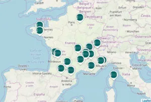

Découvrez Nature & Progrès
La découverte des Systèmes Participatifs de Garantie (SPG), via l’organisation internationale des
mouvements de la bio (Ifoam),
a été un tournant majeur pour Nature & Progrès.
Tout à coup nous avons mis des mots sur ce que nous faisions. C’était en 2008. Les adhérents se sont
reconnus dans les valeurs des SPG : vision commune, horizontalité, participation,
confiance, transparence, processus d’apprentissage. Ces valeurs ont été sources d’inspiration et ont
contribué, non seulement à faire évoluer notre SPG, mais au-delà, à modeler notre gouvernance,
notre culture commune, notre façon d’œuvrer ensemble. C’est en cela que nous sommes sur un autre
paradigme qu’une large partie de la société.
L’agroécologie paysanne s’articule autour d’un projet politique, un mouvement social et des
pratiques individuelles et collectives. Nature & Progrès en fait partie et ne cesse d’évoluer,
d’innover dans une autre direction que le courant dominant. La récupération, l’instrumentalisation
ou tout simplement le détournement d’idées, de concepts,
de pratiques est parfois frustrant. Mais cela signifie en même temps que nous sommes novateurs, que
nous avançons des idées qui ont du sens, qui changent la société. Et le public ne s’y trompe pas.
La preuve, récemment, au cours d’une émission de grande écoute sur France 2, la ferme du Hitton,
dans le Gers, a été sacrée “Ferme préférée des Français ».
Ce que ne dit pas le documentaire présentant ces paysans-savonniers, c’est que ces producteurs de
lait d’ânesse et de plantes aromatiques biologiques sont sous mention Nature & Progrès !
Alors poursuivons ce mouvement. Au-delà des termes, expliquons ce que nous faisons. Œuvrons
ensemble pour construire et réinventer sans cesse, un monde qui nous ressemble.
Jordy Van Den Akker
Paysan N&P Tarn
des professionnels engagés sur tout le territoire
La revue à la une

NATURE ET PROGRES C'EST:
Une Association

Une Mention

Une Revue

DERNIERES ACTUALITES